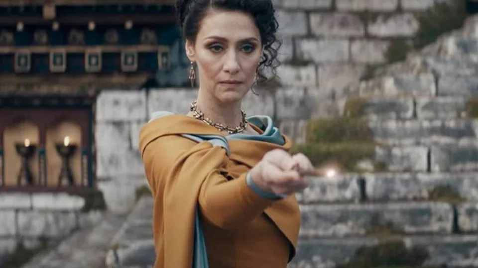

Aprendendo Git

Batman (2022)
 9.2
9.2
 Favoritar
Favoritar

Os Segredos de Dumbledore (2022)
9.2
Favoritar
Franquia derivada de Harry Potter, Animais Fantásticos nunca conseguiu reproduzir em tela o encanto da série original que conquistou a geração millennial. Embora …E Onde Habitam tenha apresentado com sucesso novos cantos do mundo mágico, o excesso de exposição e o uso de reviravoltas óbvias tornou cansativa a experiência de assisti-lo. Já Os Crimes de Grindelwald, segundo capítulo dessa nova leva de filmes, parece menos uma produção hollywoodiana e mais uma colcha de retalhos de ideias e eventos aleatórios imaginados por J.K. Rowling entre uma declaração transfóbica e outra. Neste cenário, Animais Fantásticos: Os Segredos de Dumbledore chega aos cinemas sob uma desconfiança natural. O novo longa da franquia, no entanto, é o mais regular entre seus “irmãos”, embora seja também o mais monótono.

John Wick 4 (2023)
9.2
Favoritar
As projeções apontam que John Wick 4: Baba Yaga terá a maior bilheteria de abertura da franquia, de acordo com o ComicBook. O longa já teve o melhor primeiro dia de exibição, arrecadando US$ 29,4 milhões, mas a expectativa é que o valor chegue a US$ 70,6 milhões até domingo (26).